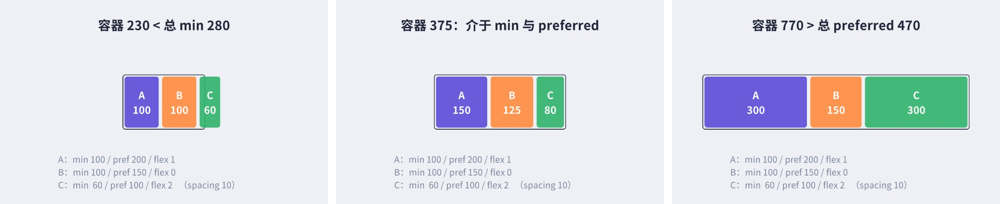
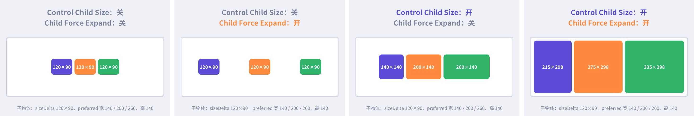
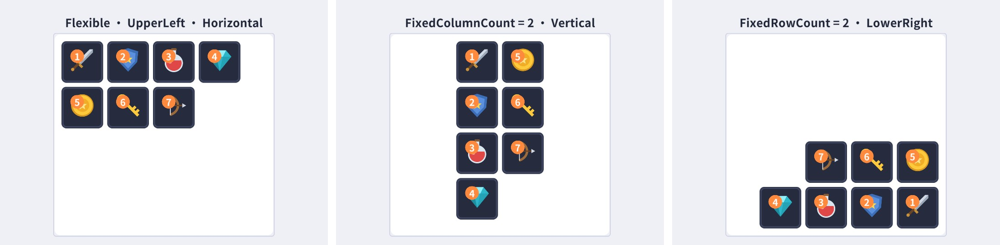
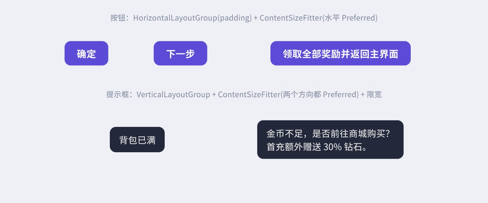
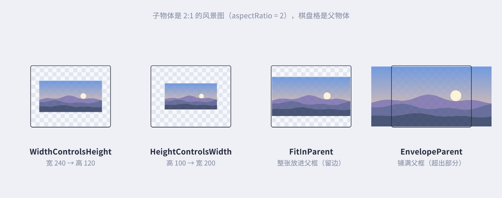
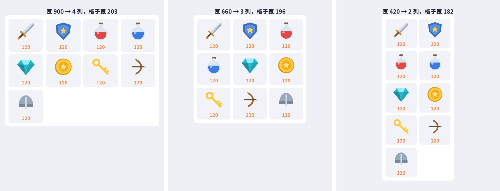
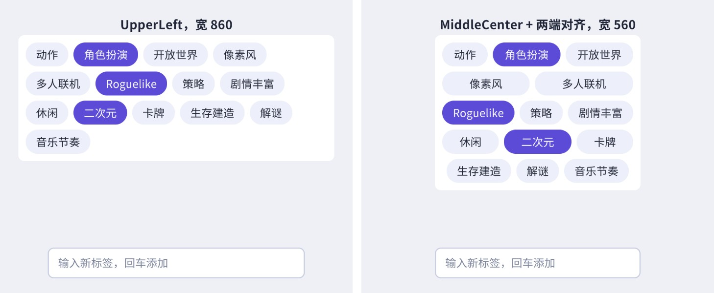
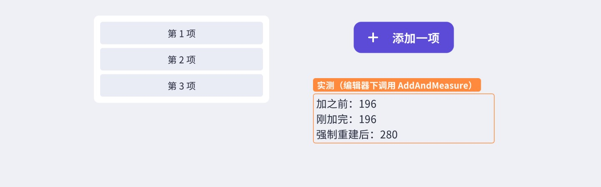
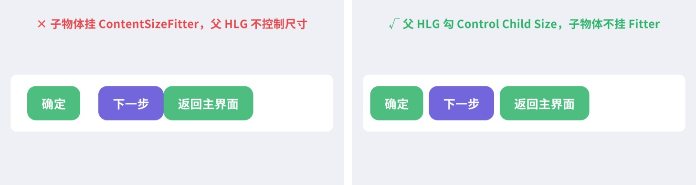

列表越来越长、文字长短不一、屏幕比例千奇百怪——手摆坐标很快就会失控。UGUI 的自动布局系统用一套“先问尺寸、再定位置”的两阶段算法，把这些活接了过去。本章先把这套算法从源码里拆开讲清楚，再把每个布局组件的参数逐一实测，最后亲手实现一个流式布局。
前几章我们都是用 RectTransform 的锚点和尺寸“手摆”界面。手摆适合结构固定的界面：标题永远在顶上、按钮永远在右下角。但游戏里有大量“内容决定形状”的界面：背包里物品数量随时变化，聊天消息有长有短，多语言版本里同一个按钮的文字可能差出一倍长。这时如果还靠手算坐标，每次数据变化都得写一堆“上一个元素的底部 + 间距 = 下一个元素的顶部”的代码，而且屏幕尺寸一变就得重算。
自动布局（Auto Layout）把这类计算标准化了：每个元素只需要报告“我最少要多大、最好多大、愿不愿意分多余的空间”，由父物体上的布局组（Layout Group）统一决定每个孩子放在哪、多大。数据变了，元素只要说一声“我脏了”，布局系统会在本帧渲染前把受影响的部分重新算一遍。
代价也要先说清楚：自动布局是在 C# 里遍历层级、调用接口、反复 GetComponents 的，层级越深、元素越多越贵；而且结果有“一帧延迟”的特性。所以本章的态度是：该用就用，但要知道它在背后干了什么。读完 10.2、10.3 两节的源码分析，后面那些参数和坑都会变得很好理解。
布局系统的全部约定写在 Runtime/UI/Core/Layout/ILayoutElement.cs 这一个文件里，一共 5 个接口：
// 摘自 com.unity.ugui 1.0.0 Runtime/UI/Core/Layout/ILayoutElement.cs（去掉了注释）
public interface ILayoutElement
{
void CalculateLayoutInputHorizontal();
void CalculateLayoutInputVertical();
float minWidth { get; }
float preferredWidth { get; }
float flexibleWidth { get; }
float minHeight { get; }
float preferredHeight { get; }
float flexibleHeight { get; }
int layoutPriority { get; }
}
public interface ILayoutController
{
void SetLayoutHorizontal();
void SetLayoutVertical();
}
public interface ILayoutGroup : ILayoutController
{
}
public interface ILayoutSelfController : ILayoutController
{
}
public interface ILayoutIgnorer
{
bool ignoreLayout { get; }
}
可以把它们理解成两种角色：
注意布局组同时实现了 ILayoutElement 和 ILayoutGroup：它一方面要控制孩子，一方面还要把“孩子们加起来需要多大”报告给自己的父级——这正是嵌套布局能够工作的原因。
一个按钮上可能同时有 Image（报 sprite 的尺寸）、LayoutElement（你手填的值）、HorizontalLayoutGroup（报孩子加起来的尺寸）。到底采纳哪个值，由 LayoutUtility.GetLayoutProperty 决定：
// 摘自 Runtime/UI/Core/Layout/LayoutUtility.cs
for (int i = 0; i < componentsCount; i++)
{
var layoutComp = components[i] as ILayoutElement;
if (layoutComp is Behaviour && !((Behaviour)layoutComp).isActiveAndEnabled)
continue;
int priority = layoutComp.layoutPriority;
// If this layout components has lower priority than a previously used, ignore it.
if (priority < maxPriority)
continue;
float prop = property(layoutComp);
// If this layout property is set to a negative value, it means it should be ignored.
if (prop < 0)
continue;
if (priority > maxPriority)
{
min = prop;
maxPriority = priority;
source = layoutComp;
}
else if (prop > min)
{
min = prop;
source = layoutComp;
}
}
规则只有三条：负数表示“这一项我不管”，直接跳过；优先级高的说了算；同优先级取最大值。Image、Text、TMP、LayoutGroup 的 layoutPriority 都是 0，LayoutElement 默认是 1，所以 LayoutElement 里填了的值会盖过其他组件，没填的（默认 -1）就不参与。另外还有一个细节：GetPreferredWidth 返回的是 Mathf.Max(min, preferred)，所以 preferred 永远不会小于 min。
这三条规则是本章后面自定义布局元素的基础：案例 10.1 的 MaxSizeLayoutElement 就是靠“优先级 2 + 对不管的项返回 -1”来给气泡加上最大宽度的。
布局到底什么时候算、按什么顺序算？答案在 LayoutRebuilder.cs。它的入口有两个：MarkLayoutForRebuild（标脏，延后到本帧末尾统一算）和 ForceRebuildLayoutImmediate（立刻算）。我们先看标脏。
// 摘自 Runtime/UI/Core/Layout/LayoutRebuilder.cs（MarkLayoutForRebuild，节选）
bool validLayoutGroup = true;
RectTransform layoutRoot = rect;
var parent = layoutRoot.parent as RectTransform;
while (validLayoutGroup && !(parent == null || parent.gameObject == null))
{
validLayoutGroup = false;
parent.GetComponents(typeof(ILayoutGroup), comps);
for (int i = 0; i < comps.Count; ++i)
{
var cur = comps[i];
if (cur != null && cur is Behaviour && ((Behaviour)cur).isActiveAndEnabled)
{
validLayoutGroup = true;
layoutRoot = parent;
break;
}
}
parent = parent.parent as RectTransform;
}
// We know the layout root is valid if it's not the same as the rect,
// since we checked that above. But if they're the same we still need to check.
if (layoutRoot == rect && !ValidController(layoutRoot, comps))
{
ListPool<Component>.Release(comps);
return;
}
MarkLayoutRootForRebuild(layoutRoot);
某个元素变脏时（比如文字变了），它会沿父链一直往上走，只要父物体上有启用的 ILayoutGroup 就继续，直到遇到第一个“没有布局组”的父物体为止。最后停下的那一层就是布局根，整棵子树会作为一个单元重建。如果元素自己和父物体都没有任何布局控制器，什么都不会发生——这就是为什么改一个普通 Image 的 sprite 虽然会调用 SetLayoutDirty，但布局队列里根本不会多出东西（第 12 章的实测表能看到这一点）。
找到根后，MarkLayoutRootForRebuild 从对象池里取一个 LayoutRebuilder 包住它，交给 CanvasUpdateRegistry.TryRegisterCanvasElementForLayoutRebuild。同一个根在一帧内只会登记一次（IndexedSet 去重），所以一帧里改一百次文字，布局也只算一遍。
到了本帧渲染前，CanvasUpdateRegistry 调用每个登记过的 LayoutRebuilder 的 Rebuild(CanvasUpdate.Layout)：
// 摘自 Runtime/UI/Core/Layout/LayoutRebuilder.cs
public void Rebuild(CanvasUpdate executing)
{
switch (executing)
{
case CanvasUpdate.Layout:
PerformLayoutCalculation(m_ToRebuild, e => (e as ILayoutElement).CalculateLayoutInputHorizontal());
PerformLayoutControl(m_ToRebuild, e => (e as ILayoutController).SetLayoutHorizontal());
PerformLayoutCalculation(m_ToRebuild, e => (e as ILayoutElement).CalculateLayoutInputVertical());
PerformLayoutControl(m_ToRebuild, e => (e as ILayoutController).SetLayoutVertical());
break;
}
}
四行代码就是整个布局系统的核心：先水平、后垂直；每个方向先“计算输入”（问尺寸）、再“控制”（定尺寸）。两个辅助函数的遍历方向正好相反：
// PerformLayoutCalculation（节选）：先递归孩子，再处理自己 —— 自下而上
if (components.Count > 0 || rect.TryGetComponent(typeof(ILayoutGroup), out _))
{
for (int i = 0; i < rect.childCount; i++)
PerformLayoutCalculation(rect.GetChild(i) as RectTransform, action);
for (int i = 0; i < components.Count; i++)
action(components[i]);
}
// PerformLayoutControl（节选）：先处理自己，再递归孩子 —— 自上而下
if (components.Count > 0)
{
for (int i = 0; i < components.Count; i++)
if (components[i] is ILayoutSelfController)
action(components[i]);
for (int i = 0; i < components.Count; i++)
if (!(components[i] is ILayoutSelfController))
{
// ……（ScrollRect 不去控制自己的 content 时的特殊处理）
action(components[i]);
}
for (int i = 0; i < rect.childCount; i++)
PerformLayoutControl(rect.GetChild(i) as RectTransform, action);
}
为什么要这样安排？道理很朴素：
PerformLayoutCalculation 只会深入“自己有 ILayoutElement 或 ILayoutGroup”的节点；PerformLayoutControl 只会深入“自己有 ILayoutController”的节点。在布局组下面插一个什么组件都没有的空 GameObject，布局链会在这里断掉：空节点的孩子既不会被计算，也不会被控制。想给布局分组又不想打断链条，就给分组节点也挂上布局组（或至少挂个 LayoutElement）。知道了调用顺序，再看布局组怎么分尺寸。Horizontal 和 Vertical 共用基类 HorizontalOrVerticalLayoutGroup，计算阶段（CalcAlongAxis）沿主轴把孩子的 min、preferred 加起来（再加间距和 padding），flexible 也加起来；在“另一个轴”上则取最大值。设置阶段（SetChildrenAlongAxis）沿主轴的核心是这几行：
// 摘自 Runtime/UI/Core/Layout/HorizontalOrVerticalLayoutGroup.cs（SetChildrenAlongAxis，主轴部分节选）
float itemFlexibleMultiplier = 0;
float surplusSpace = size - GetTotalPreferredSize(axis);
if (surplusSpace > 0)
{
if (GetTotalFlexibleSize(axis) == 0)
pos = GetStartOffset(axis, GetTotalPreferredSize(axis) - (axis == 0 ? padding.horizontal : padding.vertical));
else if (GetTotalFlexibleSize(axis) > 0)
itemFlexibleMultiplier = surplusSpace / GetTotalFlexibleSize(axis);
}
float minMaxLerp = 0;
if (GetTotalMinSize(axis) != GetTotalPreferredSize(axis))
minMaxLerp = Mathf.Clamp01((size - GetTotalMinSize(axis)) / (GetTotalPreferredSize(axis) - GetTotalMinSize(axis)));
// …… 对每个孩子：
float childSize = Mathf.Lerp(min, preferred, minMaxLerp);
childSize += flexible * itemFlexibleMultiplier;
翻译成三段话：
图 10-3 是在配套工程里用三个容器宽度实拍的结果，孩子上的数字是截图时读出的真实宽度。中间那格：总 min = 100+100+60+20 = 280，总 preferred = 200+150+100+20 = 470，容器 375，t = (375−280)/(470−280) = 0.5，于是 A = lerp(100,200,0.5) = 150，B = 125，C = 80，和图上一致。右边那格多出 300，flex 1:0:2，A 多分 100、C 多分 200。

上面的公式只针对主轴（Horizontal 的宽、Vertical 的高）。在另一个轴上，每个孩子是各自独立处理的，源码只有一行关键代码：
// 摘自 HorizontalOrVerticalLayoutGroup.cs（SetChildrenAlongAxis，另一个轴的分支） float requiredSpace = Mathf.Clamp(innerSize, min, flexible > 0 ? size : preferred);
意思是：孩子在另一个轴上的尺寸 = 容器内尺寸，但不小于自己的 min；如果孩子的 flexible 大于 0（或者勾了 Force Expand），上限是容器尺寸，于是撑满；否则上限是自己的 preferred，于是“能多大就多大，但不超过首选”。这解释了图 10-4 第三格里孩子的高度是 140（preferred）而不是撑满，而第四格勾了 Force Expand 后高度撑满了 298。
布局重建不是每帧都发生的，只有“标脏”之后才会排队。会调用 SetLayoutDirty / MarkLayoutForRebuild 的典型操作有：Graphic 的 RectTransform 尺寸变化（OnRectTransformDimensionsChange）、Text / TMP 的文字或字号变化、Image 换了一个尺寸不同的 sprite（同尺寸的 sprite 会被 m_SkipLayoutUpdate 优化掉）、布局组和 LayoutElement 的任何属性被修改、子物体的增删与激活状态变化、组件启用禁用、父子关系改变。而改颜色、移动位置、旋转、缩放都不会触发布局。第 12 章 12.7 节会用实验把这些逐一测出来。
还有一个只在编辑器里存在的细节：HorizontalOrVerticalLayoutGroup 在 #if UNITY_EDITOR 里有一个 Update，非 Play 模式下每帧检查所有孩子的 sizeDelta 是否变化，变了就标脏。这是为了让你在 Scene 视图里拖动孩子尺寸时布局能实时刷新。它不会进入发布版本，所以不必担心它的开销，但它解释了为什么“编辑器里看着对、运行时却没刷新”的情况偶尔会出现：你在运行时直接改了某个不受控孩子的 sizeDelta，而运行时没有这个 Update 帮你标脏，需要自己调用 LayoutRebuilder.MarkLayoutForRebuild。
在 Hierarchy 里选中一个空物体，。Inspector 里的字段如下（Vertical 完全相同，只是主轴换成竖直方向）：
(int)childAlignment % 3 * 0.5 得到水平方向 0/0.5/1，/ 3 * 0.5 得到垂直方向。
Reverse Arrangement反向排列（最后一个孩子排在最前面）。案例 10.1 用它让“自己的消息”头像出现在右侧，而不用改子物体顺序。
Control Child SizeWidth / Height 两个勾。勾上：孩子的尺寸由布局组根据 min/preferred/flexible 决定，并且会被锁定（Inspector 里变灰）；不勾：孩子保持自己的 sizeDelta，布局组只管位置。
Use Child Scale计算时把孩子的 localScale 乘进去。默认关闭——这意味着你给孩子做缩放动画时，布局组不会给它让位置，适合“按下放大”这种不想挤动邻居的效果。
Child Force ExpandWidth / Height 两个勾。勾上：在计算时把每个孩子的 flexible 至少当作 1（源码 flexible = Mathf.Max(flexible, 1)），于是多余空间会平均分给所有孩子。这两组勾选是最容易让人迷糊的地方，因为“Force Expand”在不控制尺寸时也有效果——它扩张的是孩子占的“格子”，不是孩子本身。图 10-4 是同一组孩子在四种组合下的实拍：三个孩子的 sizeDelta 都是 120×90，LayoutElement 里填的 preferred 宽分别是 140/200/260、高 140，Child Alignment 为 MiddleCenter，两个轴的勾选相同。

| Control | Expand | 效果（对照图 10-4） | 典型用途 |
|---|---|---|---|
| 关 | 关 | 孩子保持 120×90，按 spacing 紧挨着排，整组居中 | 一排固定大小的图标 |
| 关 | 开 | 孩子仍是 120×90，但每个孩子分到一个等宽的“格子”，在格子里居中——看起来像均匀分布 | 底部导航栏的几个按钮均分 |
| 开 | 关 | 孩子变成各自的 preferred 尺寸（140/200/260 × 140），sizeDelta 被覆盖 | 按钮宽度跟随文字 |
| 开 | 开 | 孩子先取 preferred，再平分多余空间：宽 215/275/335，高撑满容器内高 298 | 表单里拉伸的输入框、填满的列 |
Reset() 把 Control 两项改成了 false，注释说这是为了“别在你来得及关掉之前就覆盖了孩子的尺寸”。所以从代码 AddComponent 和从菜单添加，得到的默认值可能不同（代码里以你设置的为准，本书的 UIKit 都显式赋值）。网格布局和前两者完全不同：它不读孩子的 min/preferred，所有格子都是固定的 Cell Size，孩子的尺寸被强制设为 Cell Size。字段：

源码里有两个值得知道的细节。第一，SetCellsAlongAxis(0) 在水平阶段只设置尺寸，位置要等到垂直阶段才连同 x、y 一起设——注释专门解释了这样做“不违反先水平后垂直的规则”，因为水平阶段已经把孩子的宽度定好了。第二，Flexible 模式下，CalculateLayoutInputVertical 用当前宽度算列数，再推出需要几行、多高：
// 摘自 Runtime/UI/Core/Layout/GridLayoutGroup.cs（CalculateLayoutInputVertical 的 Flexible 分支） float width = rectTransform.rect.width; int cellCountX = Mathf.Max(1, Mathf.FloorToInt((width - padding.horizontal + spacing.x + 0.001f) / (cellSize.x + spacing.x))); minRows = Mathf.CeilToInt(rectChildren.Count / (float)cellCountX);
所以“宽度固定、高度随内容增长”的背包格子，只要在网格上再挂一个 Content Size Fitter（Vertical Fit = Preferred Size），高度就会自动等于行数所需的高度——这是 ScrollRect 里放网格的标准做法。Grid 的局限也很明显：格子尺寸不会随屏幕宽度伸缩，宽屏下右边会空一大块。案例 10.3 会通过继承 GridLayoutGroup 解决这个问题。
LayoutElement 什么都不控制，它只是一个“报尺寸”的组件，用来覆盖或补充同物体上其他组件报的值。七个数值字段默认都是 -1（不参与），勾选左边的复选框才会生效：
一个常用技巧是“弹簧”：在一排按钮中间放一个空物体，只挂 LayoutElement，Flexible Width = 1。多余的空间全部被它吃掉，左右两组按钮就被推到两端（案例 10.2 的“取消 / 创建”按钮就是这么靠右的）。
Content Size Fitter 是一个 ILayoutSelfController，Horizontal Fit / Vertical Fit 各有三个选项：Unconstrained（不管）、Min Size、Preferred Size。它的实现极其简单：
// 摘自 Runtime/UI/Core/Layout/ContentSizeFitter.cs（HandleSelfFittingAlongAxis 节选）
m_Tracker.Add(this, rectTransform, (axis == 0 ? DrivenTransformProperties.SizeDeltaX : DrivenTransformProperties.SizeDeltaY));
// Set size to min or preferred size
if (fitting == FitMode.MinSize)
rectTransform.SetSizeWithCurrentAnchors((RectTransform.Axis)axis, LayoutUtility.GetMinSize(m_Rect, axis));
else
rectTransform.SetSizeWithCurrentAnchors((RectTransform.Axis)axis, LayoutUtility.GetPreferredSize(m_Rect, axis));
也就是：读同一物体上其他组件报的 preferred（文字的长度、布局组算出的孩子总和），然后把自己的尺寸设成它。DrivenRectTransformTracker 会把被驱动的属性在 Inspector 里锁成灰色，防止你手动修改。

注意按钮的结构：按钮本身挂 HorizontalLayoutGroup（Control Child Size 勾上、padding 左右 48），子物体是文字。这样按钮的 preferred 宽度 = 文字宽度 + 96，CSF 再把按钮宽度设成这个值。CSF 只认它所在物体的 ILayoutElement，如果按钮上没有布局组，CSF 读到的是 Image 的 preferred（sprite 的尺寸），而不是文字的长度——这是新手最常见的“Fitter 不起作用”的原因。
Aspect Ratio Fitter 的 Aspect Mode 有五种：None、Width Controls Height（宽定、高按比例）、Height Controls Width（高定、宽按比例）、Fit In Parent（整个放进父物体，相当于 CSS 的 contain）、Envelope Parent（铺满父物体，超出部分溢出，相当于 cover）。图 10-7 中子物体都是 2:1 的风景图。

它和 Content Size Fitter 有一个实现上的差别：SetLayoutHorizontal/Vertical 是空的，真正的计算在 UpdateRect() 里，由 SetDirty、OnEnable、OnRectTransformDimensionsChange 直接触发，不走 LayoutRebuilder 的两阶段流程。所以它的结果是立即生效的。另外有个编辑器下的小坑（作者搭配图时真踩到了）：模式为 None 时，编辑器会在 UpdateRect 里把 aspectRatio 改成当前矩形的宽高比——如果你用代码先设 aspectRatio 再设模式，比例会被覆盖。正确顺序是先设 aspectMode，再设 aspectRatio。Fit In Parent / Envelope Parent 用于全屏背景图适配各种屏幕比例非常方便。
布局组件最常出现的地方是 ScrollRect 的 Content。配方几乎是固定的：Content 的锚点设为“顶部横向拉伸”（anchorMin = (0,1)、anchorMax = (1,1)、pivot = (0.5,1)），挂 VerticalLayoutGroup（Control Child Size 两项勾、Force Expand 只勾 Width）和 Content Size Fitter（Vertical Fit = Preferred Size）。这样 Content 的宽度跟随 Viewport，高度等于所有子项高度之和，ScrollRect 自然就知道能滚多远。横向列表把方向全部换过来即可。
为什么 Content 上挂 Fitter 不会触发“坑 1”的警告？因为 Content 的父物体 Viewport 上没有布局组，Content 本身就是布局根，它上面的 Fitter 位于布局链的最顶层。ScrollRect 自己也实现了 ILayoutGroup（用来根据内容尺寸显示/隐藏滚动条），但 LayoutRebuilder 的 PerformLayoutControl 专门判断了“ScrollRect 的 content 就是当前节点时不调用它”，避免 ScrollRect 和 Content 互相驱动。pivot 设在顶部也很关键：Fitter 改高度时以 pivot 为基准伸缩，pivot 在顶部，列表才会向下增长，而不是上下同时长。
如果子项高度各不相同（比如聊天消息），子项自身要能报出正确的 preferred 高度：要么子项上有布局组、高度由内容决定，要么挂 LayoutElement 写死高度。子项是一个没有任何 ILayoutElement 的空物体时，VLG 读到的 preferred 高度是 0，所有子项会叠在一起——这是滚动列表“全部挤在顶上”的最常见原因。
目标：气泡宽度跟随文字，短消息是小气泡，长消息到最大宽度后自动换行，高度随行数增长；对方消息头像在左、自己的在右；发送后列表自动滚到底。
思路：每一行是 HorizontalLayoutGroup（头像 + 气泡），气泡是 Image + VerticalLayoutGroup（提供内边距）+ TMP 文字。难点在“最大宽度”：LayoutElement 只有 min/preferred/flexible，没有 max。我们利用 10.2 节的优先级规则自己写一个 ILayoutElement：优先级 2，preferred 宽度 = min(其他组件报的 preferred, 最大宽度)，其余各项返回 -1 交给别人。
OthersPreferred 里调用的正是 LayoutUtility.GetLayoutProperty，只是在 lambda 里遇到自己时返回 -1，于是得到“除我以外”的值——和 UGUI 内部的取值规则完全一致。整个流程是这样串起来的：
发送消息的脚本只负责克隆模板和滚动：
ScrollToBottom 里的 Canvas.ForceUpdateCanvases() 不能省：新加的行此刻只是被标脏，Content 的高度还是旧的，直接设 verticalNormalizedPosition = 0 会停在“倒数第二条”。强制更新后再滚，才能真正到底（原理见 10.8 节）。
目标：一个“创建角色”表单，左侧标签列宽度固定、右对齐，右侧输入框随表单宽度伸缩；底部按钮靠右；表单高度随行数自动变化。
这个案例没有一行代码，全靠 10.3 节的分配公式：标签的 flex 是 0、输入框的 flex 是 1，表单变宽时多出来的空间全部给了输入框；表单变窄到总 preferred 以下时，标签和输入框按同一比例在 min 和 preferred 之间收缩，标签最窄 120、输入框最窄 160。
扩展：同一套结构很容易改成“窄屏时标签在上、输入框在下”的响应式表单——给每一行加一个小脚本，在行宽小于某个阈值时把 HorizontalLayoutGroup 换成 VerticalLayoutGroup（或者启用/禁用两个预先放好的布局组之一）。切换时布局组的 OnEnable/OnDisable 会自动标脏，不需要手动刷新。做多语言时，德语、俄语的标签往往比中文长一倍，建议标签列的 Preferred Width 按最长的语言来定，或者把标签文字的 TMP 打开 Auto Size（注意它的代价，见第 5 章）。
目标：商城格子在宽屏上自动多放几列，在窄屏上少放几列，并且格子宽度拉伸到正好填满，不在右边留空。
思路：继承 GridLayoutGroup，在水平阶段根据自身宽度算列数和格子宽度，然后交给父类完成排列。关键在于把计算放进水平设置阶段：按 10.3 节的顺序，SetLayoutHorizontal 执行时父物体已经把我的宽度定好了，这时读 rect.width 才是最终值；而垂直计算阶段（算需要几行、多高）在所有水平设置之后，用的就是我们刚算好的格子尺寸。
注释里提到的细节很重要：GridLayoutGroup 的 cellSize setter 会调用 SetProperty → SetDirty，而 LayoutGroup.SetDirty 发现自己正处在布局重建中时，会启动一个协程在下一帧再标脏一次（DelayedSetDirty）。如果我们每次布局都通过属性去设 cellSize，就会每帧重建一次布局，形成一个停不下来的循环。直接写受保护的字段 m_CellSize、m_ConstraintCount 可以绕开它。

常见坑：ResponsiveGridLayout 的宽度必须来自锚点拉伸或父布局组，不能来自它自己的 Content Size Fitter 水平适配——那样宽度取决于列数、列数又取决于宽度，形成循环依赖。只在竖直方向挂 Fitter。另外，GridLayoutGroup 自带的 Inspector 编辑器不会显示子类新增的字段，如果想在 Inspector 里调 m_MinCellWidth，可以给子类写一个简单的自定义编辑器，或者在 Debug 模式的 Inspector 里修改。
扩展：把 m_CellAspect 换成固定高度，就是“卡片宽度自适应、高度固定”的列表；加一个 m_MaxColumns 限制超宽屏下的最大列数，避免格子太小看不清。
目标：实现 UGUI 没有的“自动换行”布局：标签一个接一个排，放不下就换行，行高取本行最高的元素，支持左/中/右对齐和两端对齐。
思路：继承 LayoutGroup（它已经实现了 ILayoutElement 和 ILayoutGroup，并帮我们收集好了参与布局的孩子 rectChildren），严格按四个阶段分工：
| 阶段 | 已知 | 要做的事 |
|---|---|---|
| CalculateLayoutInputHorizontal | 孩子的宽度输入（它们先算完） | 报自己的宽度：min = 最宽的孩子，preferred = 所有孩子排成一行 |
| SetLayoutHorizontal | 自己的最终宽度 | 贪心断行；设置每个孩子的 x 和宽度 |
| CalculateLayoutInputVertical | 孩子的最终宽度（文字已能算出换行后的高度） | 每行高 = 本行最高的孩子，报自己的总高度 |
| SetLayoutVertical | 自己的最终高度 | 设置每个孩子的 y 和高度 |
先看两个“报尺寸”的阶段：
preferred = 全部排成一行的宽度，这样如果你给流式布局挂 Content Size Fitter 的水平 Preferred，它会变成单行（这在横向滚动的标签条里正好有用）；min = 最宽的那个孩子，保证父级不会把它压得比最宽的标签还窄。
断行是最朴素的贪心：放得下就接在本行后面，放不下就换行。GetAlignmentOnAxis(0) 是基类提供的工具，把 Child Alignment 换算成 0 / 0.5 / 1，乘以本行剩余宽度就是这一行的起始偏移。两端对齐时把剩余宽度平分给本行每个元素（最后一行不做，和排版软件的习惯一致）。
垂直两个阶段复用了水平阶段算好的 m_Lines。这里体现了两阶段算法的价值：断行只依赖宽度，所以在水平阶段做；行高依赖孩子的高度，而孩子（比如会换行的文字）的高度依赖它的宽度，所以必须等到垂直计算阶段再读。如果你在 CalculateLayoutInputHorizontal 里就去读孩子的高度，长标签换行时就会算错。
标签本身不需要任何代码：每个标签是“Image(pill 精灵) + HorizontalLayoutGroup(padding 28/28/10/12，Control Child Size 勾上) + TMP 文字”，它的 preferred 宽度自然就是文字宽度加 padding。容器挂 FlowLayoutGroup + Content Size Fitter（Vertical Preferred），高度随行数变化。

演示脚本 TagCloud 负责生成标签、点击切换选中、输入框回车添加新标签。在场景里输入一个很长的标签，可以看到它被压到整行宽度（BreakLines 里的 Mathf.Min(..., inner)）。
常见坑：如果关掉 Child Control Size，FlowLayoutGroup 用的是孩子原来的 sizeDelta，这时孩子必须是固定尺寸的（比如统一大小的图标），否则文字标签会按创建时的默认宽度排列，看起来“断行位置不对”。还要注意孩子不能再挂 Content Size Fitter（理由同 10.8 节坑 1）：标签的宽度要由标签自己的布局组报给流式布局，而不是让标签自己改自己。最后，流式布局的高度依赖宽度，所以它的宽度不能交给 Fitter 的水平 Preferred 去决定，否则永远只有一行。
SetChildAlongAxis 还会把孩子的锚点统一设到左上角 (0,1)，后续的位置换算才简单。目标：背包按“装备 / 消耗品 / 任务道具”分组，点击分组标题展开或收起，带平滑动画，下面的分组自动跟着移动。
思路：不要去手动移动下面的分组，让布局系统来做。每个分组是一个 VLG，里面是标题按钮和 Body。Body 挂 RectMask2D（裁掉没展开的部分）和 LayoutElement，Body 下面的 Content 挂 VLG + Content Size Fitter，决定“完全展开时有多高”。动画只做一件事：在 0 和 Content 的首选高度之间插值 Body 的 LayoutElement.preferredHeight。
preferredHeight 的 setter 内部调用了 SetDirty → MarkLayoutForRebuild，于是从 Body 一路向上找到最外层的布局根（滚动列表的 Content），整棵树重新布局：本分组变高，下面的分组被往下推，Content 的高度也变了，ScrollRect 的滚动范围随之更新。注意 SetProgress 读的是 LayoutUtility.GetPreferredHeight(m_Content) 而不是 m_Content.rect.height：前者是 Content 的 VLG 在上一次布局计算中报的值，即使 Content 自己的 Fitter 还没执行，也能拿到正确的目标高度。
前面多次提到“标脏后要等到本帧末尾才算”。来看实测：一个挂 VerticalLayoutGroup + Content Size Fitter 的列表，往里加一项，分别在加之前、刚加完、调用 LayoutRebuilder.ForceRebuildLayoutImmediate 之后读列表高度：

原因在 10.3 节已经讲过：加子物体只会触发 LayoutGroup.OnTransformChildrenChanged → SetDirty → MarkLayoutForRebuild，真正的计算在 Canvas.willRenderCanvases 回调里（第 12 章会展开这个回调）。所以同一帧里，任何依赖布局结果的代码都可能读到旧值：滚到底、根据内容高度放置提示箭头、读文字换行后的高度……解决办法有三种：
| 方法 | 做了什么 | 代价与注意 |
|---|---|---|
LayoutRebuilder.ForceRebuildLayoutImmediate(rt) | 立刻以 rt 为根做一次完整的四趟布局 | 只算布局，不做图形重建；如果 rt 不是真正的布局根（它的父物体也有布局组），父级不会更新。嵌套很深时可能要对内层、外层各调一次 |
Canvas.ForceUpdateCanvases() | 立刻执行一遍完整的 CanvasUpdateRegistry 更新（所有画布的布局 + 图形重建） | 范围最大、最省心，开销也最大；案例 10.1 用的就是它 |
等一帧（协程 yield return null 或 WaitForEndOfFrame） | 让系统按正常流程算完再读 | 没有额外计算，但逻辑会晚一帧，可能闪一下 |
Inspector 会给出黄色警告：“Parent has a type of layout group component. A child of a layout group should not have a Content Size Fitter component, since it should be driven by the layout group.”（来自 Editor/UI/SelfControllerEditor.cs）。原因看 10.3 节的遍历：布局根是父物体，PerformLayoutControl 先执行父物体的 HLG（此时孩子还是旧尺寸），再递归到孩子执行 Fitter。父亲排位置时用的是孩子的旧宽度，孩子随后才改成新宽度——于是重叠或留缝。图 10-14 左边是作者实拍的错误结果：“返回主界面”压在了“下一步”上面。

正确做法：让父布局组勾选 Control Child Size，孩子不挂 Fitter，孩子的尺寸信息通过它自己的布局组（或文字）报上去。Fitter 只该挂在布局链的最顶层（比如 ScrollRect 的 Content、独立的提示框）。
同一个 RectTransform 的同一个属性只能有一个“驱动者”。父 HLG 勾了 Control Child Size Width，孩子又挂 Aspect Ratio Fitter（Height Controls Width），两者都想改宽度，结果取决于执行顺序，表现为闪烁或尺寸来回跳。排查时看 Inspector：被驱动的字段会变灰，并显示 “Some values driven by ...”。
见 10.3 节的警告框。症状是“深层的文字改了内容，外层的列表高度不变”。
在 SetLayoutHorizontal 之类的回调里设置布局组的公开属性，会触发 DelayedSetDirty，导致每帧都重建。自定义布局时改自己的参数请直接写字段（案例 10.3）。
作者在搭聊天气泡模板时遇到：模板放在一个未激活的节点下，用代码 AddComponent 的 TextMeshProUGUI 不会执行 Awake，TMP Settings 里的默认值（包括自动换行）没有读进来，enableWordWrapping 是 false，克隆出来的气泡文字一行到底不换行。显式设置 enableWordWrapping = true 即可。
最后把本章的组件按“要解决的问题”整理一遍，遇到需求时对号入座：
| 需求 | 推荐组件 | 要点 |
|---|---|---|
| 一排/一列元素，尺寸各异 | Horizontal / Vertical Layout Group | 尺寸跟随内容就勾 Control Child Size；要均分就再勾 Force Expand |
| 等大的格子（背包、技能栏） | Grid Layout Group | 宽度要自适应时用案例 10.3 的子类 |
| 自动换行的标签、词条 | FlowLayoutGroup（案例 10.4） | UGUI 没有内置，需要自己写 |
| 容器大小跟随内容（滚动列表、提示框） | Content Size Fitter | 只挂在布局链最顶层 |
| 某个元素固定尺寸 / 吃掉剩余空间 / 不参与布局 | Layout Element | Preferred、Flexible、Ignore Layout |
| 图片保持比例、背景铺满屏幕 | Aspect Ratio Fitter | Envelope Parent 铺满，Fit In Parent 留边 |
| 内容有最大宽度 | 自定义 ILayoutElement（案例 10.1） | 用高优先级覆盖 preferred |
移动端还有几点值得注意。第一，布局重建全部在主线程的 C# 里执行，低端安卓机上一次深层布局可能比编辑器慢好几倍，列表滚动时切忌每帧改动列表里的文字或尺寸。第二，横竖屏切换、刘海屏安全区调整会改变根节点尺寸，根布局组会因为 OnRectTransformDimensionsChange 自动重排，这是好事，但如果界面里有几十个独立的布局根，切换的那一帧会有明显卡顿，可以在切换时先隐藏复杂界面。第三，CanvasScaler 改变缩放因子时，所有文字的 preferred 尺寸都会变化，布局会整体重算一次，这在第一次打开界面时是不可避免的开销，不要误以为是你的代码问题。第四，在 Awake 里读布局结果一定是旧值（甚至是 0），需要尺寸的初始化逻辑放到下一帧，或者先调用一次 ForceRebuildLayoutImmediate。